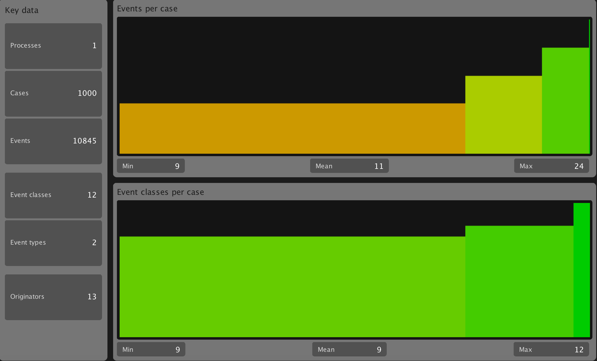

class: center, middle # Mining an cellphone repair process using ProM 6.7 ** * Presentation from Benedict Heidmeyer, Niclas Jensen and Fabian Schimke * --- # Agenda <div style="line-height: 200%; font-size: 1.5em;"> 1. Introduction <br> 2. Inspecting Event Log <br> 3. Cleaning Event Log <br> 4. Mining the Control-Flow Perspective <br> 5. Mining Case-Related Information <br> 6. Mining Organizational-Related Information </font> --- # Introduction --- # Inspecting Event Log <ul class="my-list"> <li>How many cases (or process instances) are in the log? </li> <li>How many tasks (or audit trail entries) are in the log? </li> <li>How many resources are in the log?</li> <li>Are there running cases in the log?</li> <li>Which resources work on which tasks?</li> </ul> --- #How many cases (or process instances) are in the log? <img src="questions.png" style="width: 100%"/> --- #How many tasks (or audit trail entries) are in the log? <img src="questions.png" style="width: 100%"/> --- #How many resources are in the log? <img src="questions.png" style="width: 100%"/> --- #Are there running cases in the log? <img src="questions.png" style="width: 100%"/> --- #Which resources work on which tasks? <img src="resources.png" style="width: 100%"/> --- # Cleaning Event Log  --- <h3>Before</h3> <img src="startendevents.png" style="width: 100%" /> <h3>After (with filter)<h3/> <img src="startendeventsfilter.png" style="width: 100%; margin-top: 20px" /> --- # Mining the Control-Flow Perspective ### How are the cases actually being related?  --- # Mining Case-Related Information --- # Mining Organizational-Related Information